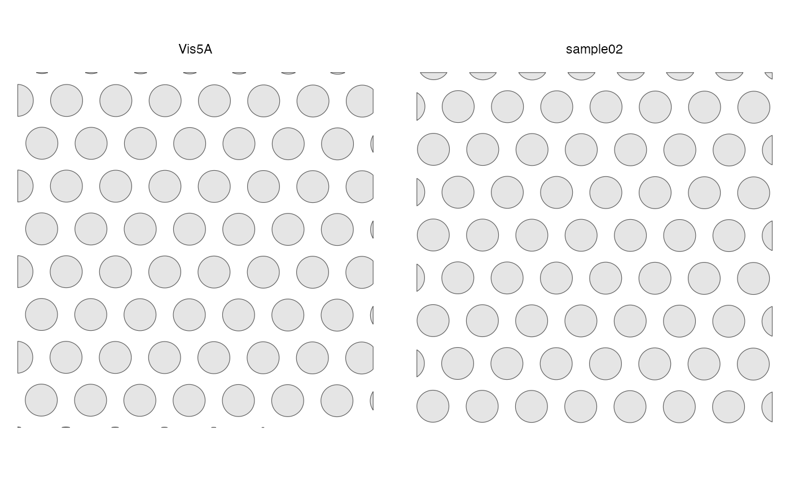

Different samples are plotted in separate facets.
Usage
plotGeometry(
sfe,
type,
MARGIN = 2L,
sample_id = "all",
ncol = NULL,
bbox = NULL,
image_id = NULL,
maxcell = 5e+05
)Arguments
- sfe
A
SpatialFeatureExperimentobject.- type
Name of the geometry associated with the MARGIN of interest for which to compute the graph.
- MARGIN
Just like in
apply, where 1 stands for row, 2 stands for column. Here, in addition, 3 stands for annotation, to query theannotGeometries, such as nuclei segmentation in a Visium data- sample_id
Sample(s) in the SFE object whose cells/spots to use. Can be "all" to compute metric for all samples; the metric is computed separately for each sample.
- ncol
Number of columns if plotting multiple features. Defaults to
NULL, which means using the same logic asfacet_wrap, which is used bypatchwork'swrap_plotsby default.- bbox
A bounding box to specify a smaller region to plot, useful when the dataset is large. Can be a named numeric vector with names "xmin", "xmax", "ymin", and "ymax", in any order. If plotting multiple samples, it should be a matrix with sample IDs as column names and "xmin", "ymin", "xmax", and "ymax" as row names. If multiple samples are plotted but
bboxis a vector rather than a matrix, then the same bounding box will be used for all samples. You may see points at the edge of the geometries if the intersection between the bounding box and a geometry happens to be a point there. IfNULL, then the entire tissue is plotted.- image_id
ID of the image to plot behind the geometries. If
NULL, then not plotting images. UseimgDatato see image IDs present.- maxcell
Maximum number of pixels to plot in the image. If the image is larger, it will be resampled so it have less than this number of pixels to save memory and for faster plotting. We recommend reducing this number when plotting multiple facets.
Examples
library(SFEData)
sfe1 <- McKellarMuscleData("small")
#> see ?SFEData and browseVignettes('SFEData') for documentation
#> loading from cache
sfe2 <- McKellarMuscleData("small2")
#> see ?SFEData and browseVignettes('SFEData') for documentation
#> downloading 1 resources
#> retrieving 1 resource
#> loading from cache
sfe <- cbind(sfe1, sfe2)
sfe <- removeEmptySpace(sfe)
plotGeometry(sfe, "spotPoly")

plotGeometry(sfe, "myofiber_simplified", MARGIN = 3)